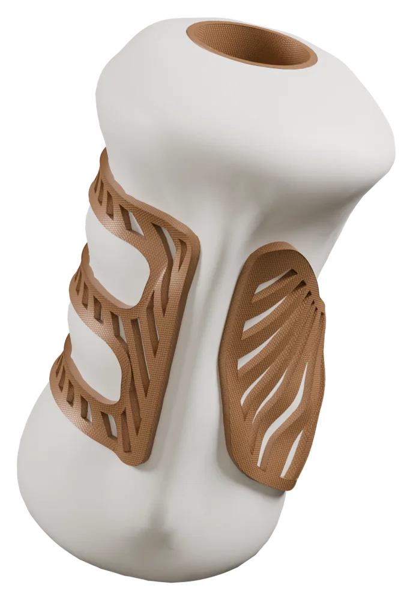

Mango SOMA
El mango ergonómico que hace que tus herramientas de cocina se adapten a ti, y no al revés.
- Hendiduras anatómicas que guían tus dedos
- Superficie antideslizante de TPE
- Se adapta a tus propios cubiertos
- Ligero, rígido y fácil de limpiar
Total$350 MXN
Cada curva tiene una razón.
Hendiduras anatómicas
Siguen la forma natural de tus dedos para que no tengas que cerrar de más la mano ni apretar para sujetar.
Relieve antideslizante de TPE
Un elastómero suave con relieve donde descansa tu mano: mejora el agarre y reduce el deslizamiento mientras trabajas.
Cuerpo de polipropileno
Ligero pero rígido: resiste la fuerza de picar o batir sin doblarse y se fabrica con calidad constante.
Acople intercambiable
El orificio superior recibe el mango de tu cubierto con una unión simple y resistente.
Lo que hay dentro de SOMA.
- Cuerpo
- Polipropileno (PP): ligero y resistente
- Agarre
- Elastómero termoplástico (TPE) antideslizante
- Ergonomía
- Mango de mayor diámetro con hendiduras para los dedos
- Sistema
- Acople mecánico para tus cubiertos
- Compatible con
- Tenedor, cuchara y cuchillo (no incluidos)
- Acciones
- Agarrar, presionar, girar, cortar y mezclar
- Colores
- Nogal, olivo y carbón
- Cuidado
- Fácil de limpiar · piezas reemplazables
- Fabricación
- Moldeo por inyección · diseñado en Mérida, Yucatán
¿SOMA es para ti?
Es ideal si…
- Vives con artrosis, osteoartritis o molestias en las manos.
- Los utensilios delgados te cansan, te duelen o se te resbalan.
- Quieres seguir cocinando por tu cuenta, a tu manera.
A tener en cuenta...
SOMA necesita un agarre palmar básico: poder cerrar la mano, aunque sea parcialmente. Si hoy no puedes cerrarla, un sujetador con correa puede funcionarte mejor, y con gusto te orientamos.
SOMA es un utensilio de cocina, no un dispositivo médico. Si tienes dudas sobre tu condición, consulta a tu especialista o terapeuta ocupacional.
Resolvemos tus dudas.
¿El mango incluye cubiertos?
No. Vendemos solo el mango: se acopla a los cubiertos que ya tienes en casa, como tenedor, cuchara o cuchillo, y lo cambias de uno a otro cuando lo necesites.
¿Cómo se limpia?
Está diseñado con formas simples para que no se acumulen residuos y sea fácil de lavar. Puedes retirar el cubierto del mango y lavar cada uno por separado.
¿Me sirve si no puedo cerrar la mano?
SOMA requiere un agarre palmar básico. Si no puedes cerrar la mano, un sujetador con correa puede ser más adecuado.
¿Es un producto médico?
No. SOMA es un utensilio de cocina diseñado con criterios ergonómicos. Se ve y se usa como cualquier herramienta de cocina contemporánea, solo que mucho más cómoda.

Menos esfuerzo. Más control. Tu ritmo.
Lleva hoy tu mango SOMA y vuelve a cocinar con confianza.